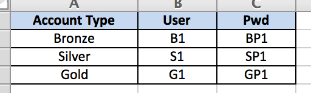

Contextual Data References¶
Purpose¶
There are various situations in which you need contextual data. Such a need is catered by the concept of Contextual Data References (or simply Data References) in Arjuna.
Consider the following example: 1. You have 3 types of user accounts - Bronze, Silver and Gold. 2. The user account information includes a User and Pwd to repesented user name and password representing a given account type. 3. In different situations, you want to use the user accounts and retrieve them by the context name from a single source of information.
Excel Data References¶
Arjuna supports Excel based data references out of the box. These reference files are automatically loaded when Arjuna.init() is called by Arjuna launcher.
There are two types of Excel based Data References that you can create in Arjuna:
Column Data References¶
You place such files in <Project Root>/data/reference/column directory. A reference file can be found in this example project.

In a column data reference file, the context of data is represented by columns. Here Account Type’s values - Bronze, Silver and Gold represent the contexts, for which the User and Pwd values are different.
Row Data References¶
You place such files in <Project Root>/data/reference/row directory. A reference file can be found in this example project.
In a row data reference file, the context of data is represented by cells of the first column. Here Account Type’s values - Bronze, Silver and Gold represent the contexts, for which the User and Pwd values are different.
The Magic R Function¶
You can access data references in your test code with Arjuna’s magic R function (similar to L and C functions seen in other features).
It has the following signature. The first argument is the query. bucket and context are optional arguments.
The name of the file is the bucket name. For example, here cusers and rusers are buckets represenating cusers.xls and rusers.xls data reference files.
- You can retrieve values from the data reference with a combination of query, bucket and context combinations.
Query can contain just the ref name and bucket and context arguments can be provided.
Query can be of format context.refname and bucket can be supplied as argument.
Query can be of format bucket.context.refname without passing bucket and context arguments separately.
The only difference between the two styles of references is the format and the way Arjuna loads them. Usage for a test author is exactly the same.